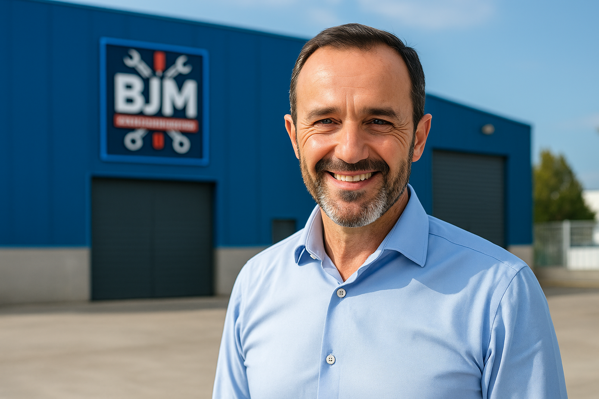

BJM Mantenimientos y Servicios Industriales
Expertos en mantenimiento industrial, automatización de procesos y servicios técnicos para comunidades. Ayudamos a nuestros clientes a maximizar la eficiencia de sus instalaciones, reducir paradas y asegurar el correcto funcionamiento de sus equipos.
Realizamos informes técnicos del estado real de la maquinaria, implantamos planes de mantenimiento preventivo y atendemos urgencias con rapidez. Nuestro compromiso es garantizar continuidad, seguridad y rentabilidad.
¿Por qué confiar en BJM?
- Gestión total del Departamento de Mantenimiento
- Mantenimiento preventivo, correctivo y predictivo
- Asistencia urgente y servicio de guardias técnicas
- Informes de diagnóstico y adecuación a normativas (RD1215/CE)
- Movimiento, instalación y mejora de maquinaria industrial
- Taller propio para reparaciones especializadas
- Automatización de procesos y soluciones a medida
- Servicios técnicos para edificios, comunidades y zonas comunes

Desde plantas de producción hasta instalaciones comunitarias, en BJM somos el equipo técnico que necesitas.
Ver todos los servicios Contacto directo